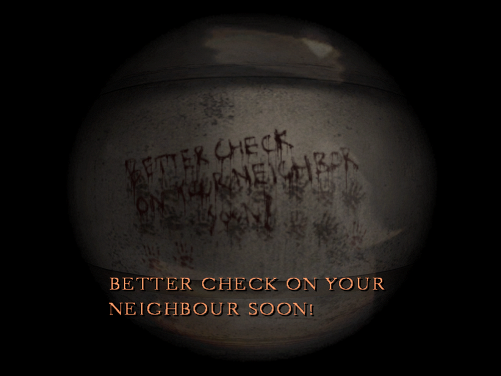

[SH4] Two Knocking Sound Events

The Famous Version and the Lesser-Known One
![[SH4] Two Knocking Sound Events](img/da06.png)
This is a mirror of the DeviantArt version linked above, provided as a backup and for easier access.

The superintendent Frank checks if Henry's inside, Walter knocks on Eileen's door—apart from those cutscenes, there are also several events where knocking occurs.
⚠️Volume Warning
✅BETTER CHECK ON YOUR NEIGHBOR SOON!
This one hardly needs explanation. It happens during the Building World, and the knocking continues endlessly until you confirm the message "BETTER CHECK ON YOUR NEIGHBOR SOON!" through the peephole.
It's an event that doesn't affect the story if you skip it.
✅A simple anomaly with only a knocking sound.
It's random, so sometimes it takes forever, but the steps themselves are simple. I've seen it multiple times, and it worked both on the Japanese PS2 version and GOG, so it should be reproducible elsewhere too.
Since it's just a room haunting, it doesn't depend on difficulty, endings, or anything like that.
It's a subtle anomaly that's easy to miss.
It occurs after the attack on Eileen and during t the haunting. While you're relaxing in Room 302 for a few minutes, you hear knock knock knock, knock-a-knock, knock knock knock, but when you look through the peephole, no one is there. You can experience it repeatedly if you stay in the room.